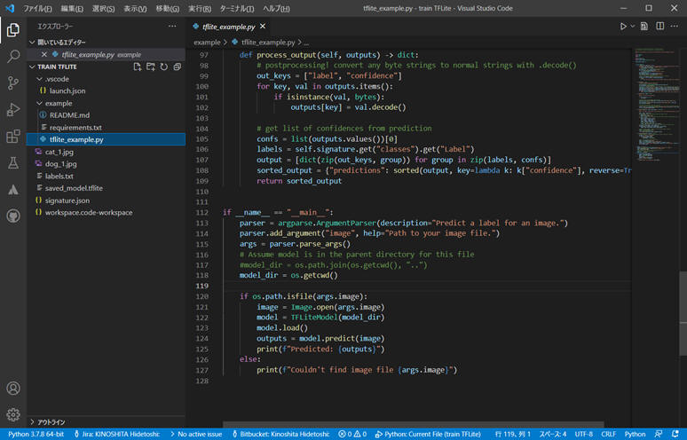

6. Export 機能
「TensorFlow」「TensorFlow.js」「TensorFlow
Lite」「ONNX」のファイル形式で学習結果を出力することができます。
これにより別のPCやサーバー、クラウド環境、Raspberry
Piなどで Lobe で作成したAIモデルを利用することができます。
モデルを実際に Export して Python プログラムで使用してみます。ここでは「TensorFlow Lite」をクリックします。
Export するフォルダを選択します。
最適化を行ってからExportしたい場合は右側の[Optimize & Export]を選択します。 ここでは「Just Export」をクリックします。
Export 完了です。[Done]をクリックします。
こんな感じでファイル出力されました。
出力された “tflite_example.py” を vscode で動かしてみます。 プログラムはわずか 127行 のプログラムでした。

細かい設定情報は、ファイル "signature.json" に記録されているようです。
{"doc_id": "03d6449c-7a34-4444-8b54-3987f8063935",
"doc_name": "train",
"doc_version": "459b7c84515bf8d6bfc0ef320cd6359f",
"format": "tf_lite",
"version": 8,
"inputs": {"Image": {"dtype": "float32", "shape": [null, 224, 224, 3], "name": "Image"}},
"outputs": {"Confidences": {"dtype": "float32", "shape": [null, 3], "name": "03d6449c-7a34-4444-8b54-3987f8063935.4d1cd0b3-b374-41f2-8dd5-cf40832e8f97/dense_2/Softmax"}},
"tags": [],
"classes": {"Label": ["cat", "dog", "human"]},
"filename": "saved_model.tflite",
"export_model_version": 1}
[注意]
- カレントフォルダを "example" の中にして実行するようにプログラムが作成されていました。
- 同様に、学習済みデータ "saved_model.tflite" ファイルはカレントフォルダの１つ上位フォルダに保存されている必要があります。
Example/requirements.txt に従って下記をインストールしました。
- pillow
- tflite_runtime
- numpy
"requirements.txt" の内容は以下の通り。
pillow==8.2.0 # TF Lite runtime packages based on OS and python version: https://www.tensorflow.org/lite/guide/python#install_just_the_tensorflow_lite_interpreter # windows https://dl.google.com/coral/python/tflite_runtime-2.1.0.post1-cp35-cp35m-win_amd64.whl; sys_platform == 'win32' and python_version == '3.5' https://dl.google.com/coral/python/tflite_runtime-2.1.0.post1-cp36-cp36m-win_amd64.whl; sys_platform == 'win32' and python_version == '3.6' https://dl.google.com/coral/python/tflite_runtime-2.1.0.post1-cp37-cp37m-win_amd64.whl; sys_platform == 'win32' and python_version == '3.7' # mac https://dl.google.com/coral/python/tflite_runtime-2.1.0.post1-cp35-cp35m-macosx_10_14_x86_64.whl; sys_platform == 'darwin' and python_version == '3.5' https://dl.google.com/coral/python/tflite_runtime-2.1.0.post1-cp36-cp36m-macosx_10_14_x86_64.whl; sys_platform == 'darwin' and python_version == '3.6' https://dl.google.com/coral/python/tflite_runtime-2.1.0.post1-cp37-cp37m-macosx_10_14_x86_64.whl; sys_platform == 'darwin' and python_version == '3.7' # linux https://dl.google.com/coral/python/tflite_runtime-2.1.0.post1-cp35-cp35m-linux_x86_64.whl; sys_platform == 'linux' and platform_machine == 'x86_64' and python_version == '3.5' https://dl.google.com/coral/python/tflite_runtime-2.1.0.post1-cp36-cp36m-linux_x86_64.whl; sys_platform == 'linux' and platform_machine == 'x86_64' and python_version == '3.6' https://dl.google.com/coral/python/tflite_runtime-2.1.0.post1-cp37-cp37m-linux_x86_64.whl; sys_platform == 'linux' and platform_machine == 'x86_64' and python_version == '3.7' https://dl.google.com/coral/python/tflite_runtime-2.1.0.post1-cp38-cp38-linux_x86_64.whl; sys_platform == 'linux' and platform_machine == 'x86_64' and python_version == '3.8' # for other linux/raspberry pi, please see the link above to find the right version for your OS numpy==1.19.5
でも README.md を読んでみると、下記のようにコマンドを入力すれば良いようです。
python -m pip install --upgrade pip && pip install -r requirements.txt
これらの内容から推測すると、Python でサポートしているバージョンは 3.5、3.6、3.7 と読み取れます。
3.8
以降でも動作するかもしれないけれど、開発側は未確認と推測するべきでしょう。
実際に 3.10
で実行してみましたが、エラーになって動作できませんでした。
２つのサンプル画像に対して動作した結果です。
ちゃんと動作しました。
Export（TensorFlow Lite）に関するレポートは以上です。
7. Lobe Connect
「Lobe」でプロジェクトを開くと、自動的にローカルホスト上で動作するREST APIサーバーとしても稼働するようになっています。
「Lobe Connect」で表示されたエンドポイントのURLに対してリクエストを投げれば、モデルを利用した判別が可能となります。
“Lobe Connect” を使って Python プログラムから使ってみます。
- Lobe を起動しておきます。
- 事前に requests をインストールしておきます。
pip install requests
こんな簡単なプログラム（26行）で実現できました。

[注意] url 部分のアドレスは Lobe を起動するたびに変わるようです。